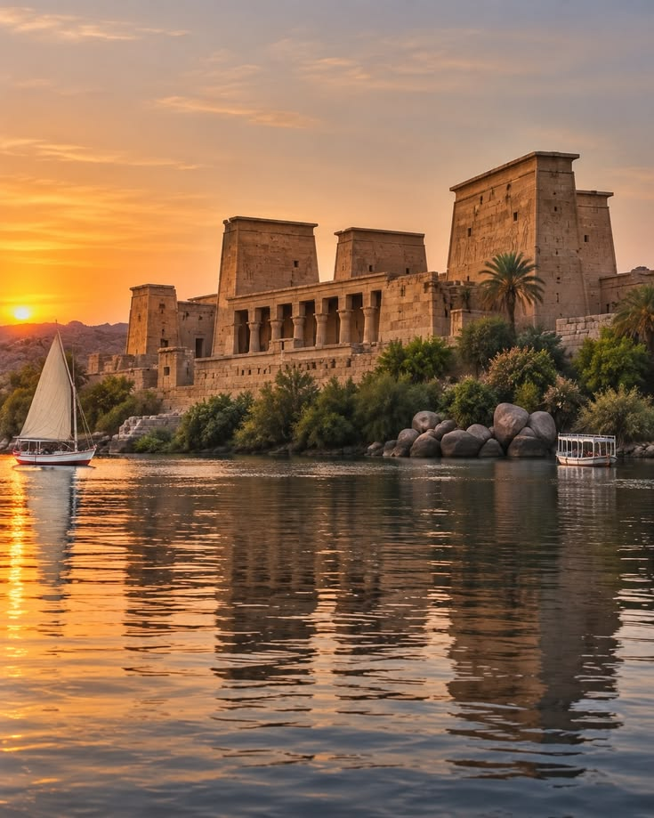

LUXOR ARCHAEOLOGICAL PROJECT · 2026–2030Archaeological Excavations and Material Culture in Ancient Thebes
Exploring the archaeological remains of ancient Thebes through systematic excavation, documentation and material culture analysis. The project focuses on understanding ancient Egyptian society, burial practices and urban development through archaeological evidence and historical interpretation.
- Ayman Mahdy
- Priya Raman
- Tobias Brandvold
- Lena Ferreira-Novak